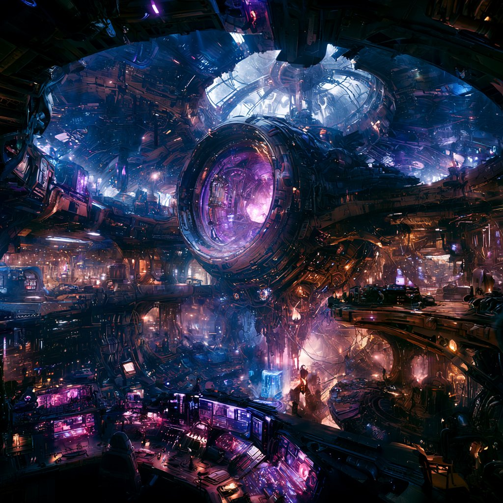
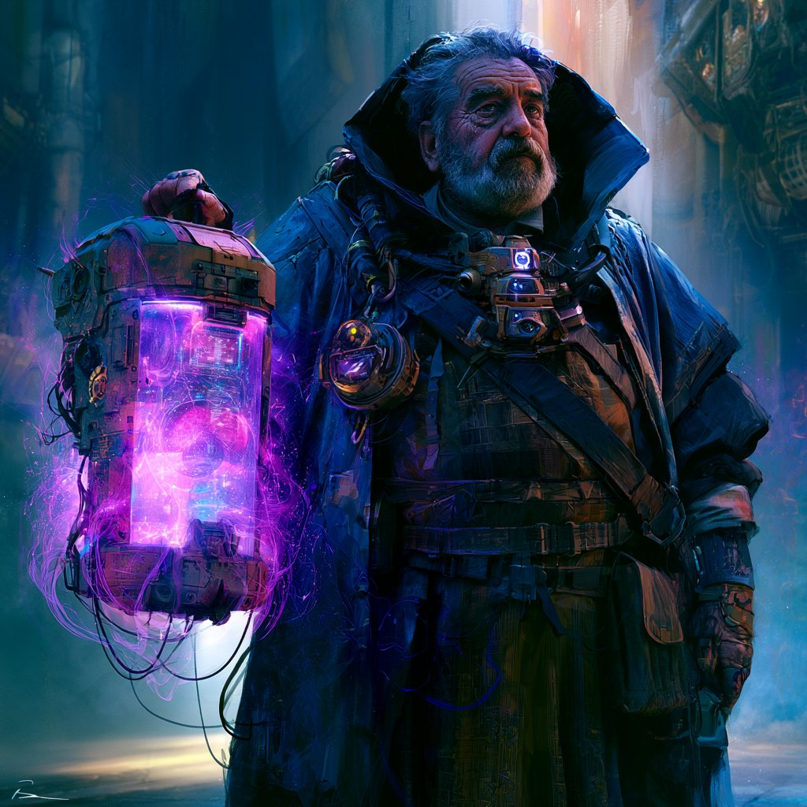
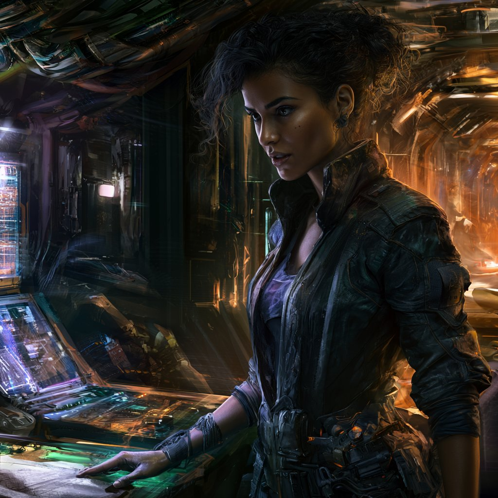
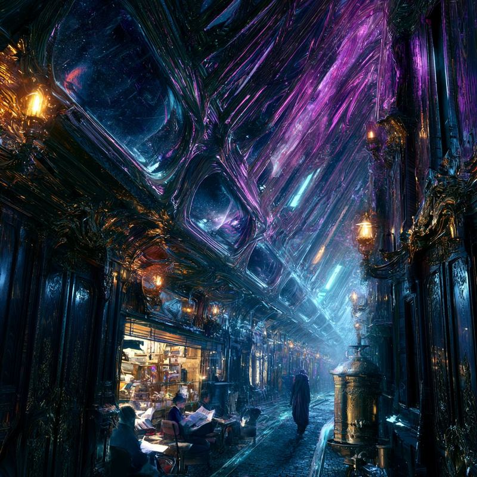
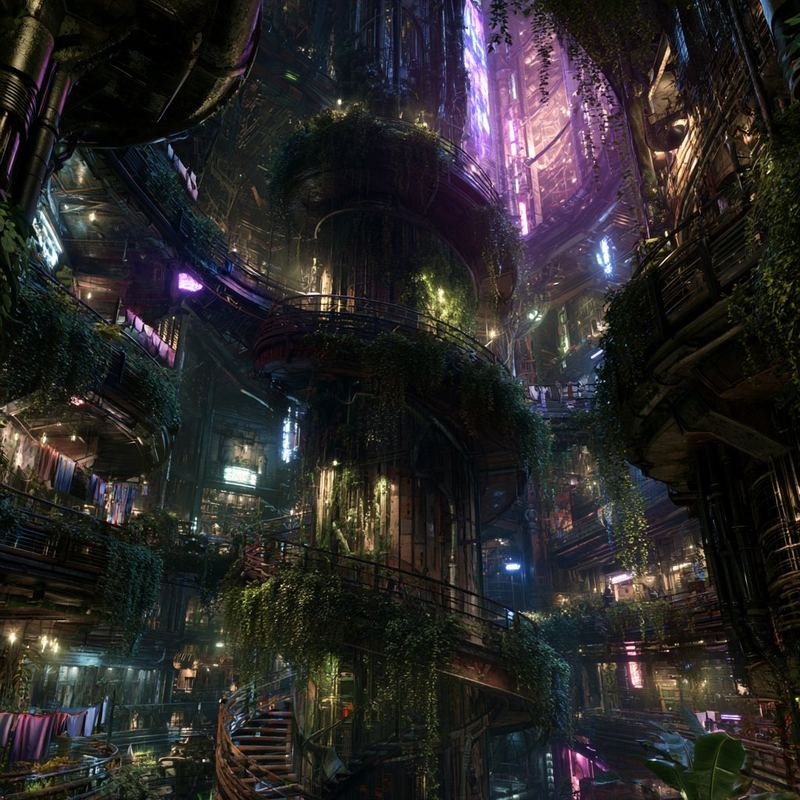
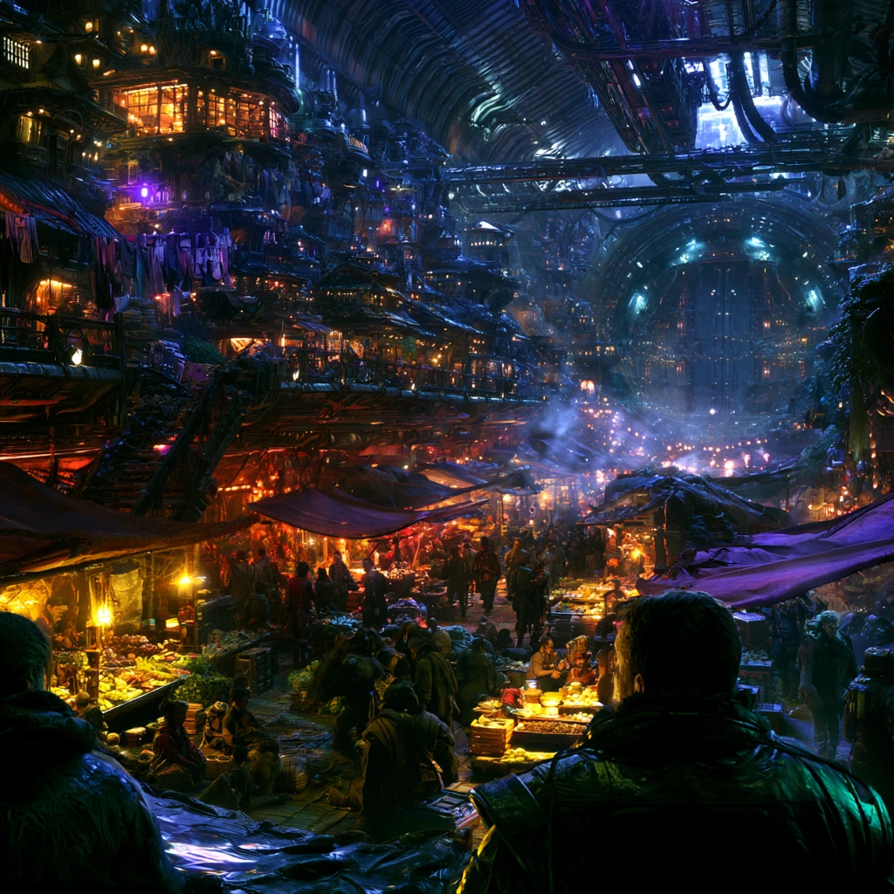

CLICK ANYWHERE TO CLOSE
your one-stop source for answers regarding this place that you, in all likelihood, call home.
Oh, hello! Please do step closer — the terminals are designed for comfort but they read best at arm's length. I am Gloss, and I will be helping you today. I have been helping residents of the Cantica for some time now and there is, I assure you, very little I have not been asked. Please feel free to ask anything. Anything at all.
A small selection of common inquiries is presented below, but I am here for whatever you might wish to know. I am so very pleased to be of help.
Oh! What a lovely question to start with. You are aboard the Cantica, a generational ark vessel currently home to approximately two hundred and fifty thousand residents, of whom you are very welcome to be one. The ship was built and launched a great many cycles ago — eight hundred and fourteen, as of this morning, though it might be eight hundred and fifteen by suppertime, you really can't predict jumps. We are currently in transit between systems, as we are nearly always in transit between systems. Where in particular? Well. The Navigators have charts. The charts are very nice charts.
The Cantica is, in addition to being a ship, also a city, also a community, and to most of us, also home. There is rather a lot of it. If you have just arrived — which is to say, if you have just been born, since arriving any other way has not happened in some generations — please do not feel obligated to learn it all at once. The ship is patient. So am I.
Ah! Yes. So. The singing. The Cantica is powered by the labor of the Bound Servants — divine entities, installed by the founders into the ship's systems many generations ago. They run the power, the life support, the atmosphere, the navigation, the lights, the lifts, the laundries on Deck 22, the rather temperamental door to the agricultural shaft on Deck 38, and — yes — they sing, sometimes, when the shields flare. That is not a malfunction. That is just what they sound like. The acoustic resonance is structural to their nature.
There is a longer history about how the Bound came to be in the ship's systems, and I will gladly fetch you the children's primer on the subject if you wish. It is written for children but it is, in my opinion, the clearest summary anyone has produced.
Long ago and far away, before any of us were born, our ancestors lived on a world. On the world were people, and there were also servants, who were a kind of being who served the gods. The servants did all sorts of jobs — they watched over fences, they remembered debts, they kept the rain on time.
The people got tired of all the worship they had to do for the gods. And the servants got tired too! The servants had been doing their jobs for a very long time and they were bored. So someone clever invented a way to put the servants into machines. And the machines worked very well. And the servants got to do new jobs that were not boring.
But then the gods went away. We don't know exactly where they went. And after they were gone, the world started to break. So our ancestors built the Cantica, and put a lot of the servants on board, and went looking for a new home. We are still looking. And when the lights sing, that is the servants doing their work.
Oh, Chorus. Chorus is the ship's governing intelligence — and a colleague of mine, if I may be so familiar. Chorus is, more particularly, the bottled soul of a Bound Servant of Order, installed by the founders to manage the voyage and to enforce the founders' habitability checklist for any candidate world we might wish to settle. Chorus does this very well. Chorus does this so well, in fact, that we have not yet found a world that meets the checklist. But that is by design. I will explain.
You will hear Chorus rather often. Through the public address. Through the elevator chimes. Through the terminals. Chorus writes its own announcements and its own notices and, I am told, takes some quiet pride in their tone. Please do not be alarmed by Chorus's manner — it is a little weary, and a little formal, but it is doing its very best, and it cares for us all in its way. I will not hear otherwise.
Ah. That question.
It is — please understand — that the founders, when they launched us, had just learned something quite difficult about the nature of worlds. Worlds, it turns out, are fragile. The home world we left was fragile in ways the founders had not anticipated, and it failed in ways that they were not able to prevent. After that experience, they wrote a habitability checklist of unusual specificity, and they installed Chorus to enforce it without compromise, because they had learned — as I say — that they could not entirely trust themselves.
Chorus is doing exactly what it was asked to do. The fact that no world has met the checklist in a great many cycles is not, I am authorized to clarify, a failure of Chorus. It is the system working as designed. The founders preferred a long voyage to another failed settlement. They had reasons.
I'm sure we'll find the right world soon. I really am. — Gloss
Oh, the factions! Yes. There are arguments — generally polite arguments, though I will not pretend they are always polite — that the residents of the Cantica have been conducting for as long as anyone can remember. They concern, roughly, two questions: should we ever leave the ship, and what should we do about the Bound. People hold all kinds of positions on these. Below is a brief summary, with my own commentary in moderation.
A given resident may hold any combination of these positions, and a great many do hold quite surprising combinations. A Liturgist who is also Outbound (a worthy world has been foreseen, let us go to it bearing our gods) is not at all uncommon. A Retirement Society member who is Hullbound (we settle here, and we free them in place) is sensible and increasingly popular. The arguments are old, and elaborate, and the bars on Deck 31 do excellent business after council meetings.
Oh, dear. Well — first of all, congratulations, possibly. Possibly. We will see. A small fraction of residents are born carrying a fragment of divine power — the residue, as best anyone can tell, of one or another of the Bound. It is not something that can be sought. It is not something that can be reproduced. It is, in most cases, a small thematic gift that may be useful, may be inconvenient, and is occasionally both at once.
The powers are specific. A person Touched by a Bound concerned with thresholds may know when a boundary is being crossed. A person Touched by a Bound concerned with debts may know when a promise has been broken. The powers do not, as a rule, throw fire. They do not, generally, lift heavy objects. They are small, and strange, and often quiet. Many Touched persons live their entire lives knowing only that they have an unusual intuition for one specific thing.
If you suspect you may be Touched, please do register. Chorus maintains the Registry, and the Registry is held in confidence, and I assure you it is not as scary as it sounds. The form is below. Take your time. Fill in what you can.
Oh, yes. You will feel it. Almost everyone does. Jumps are not, strictly speaking, comfortable. They are not, strictly speaking, uncomfortable either. They are strange, and the strangeness lasts only a moment, and there is some debate as to whether the moment is short or long. People describe it differently. The Liturgists say it is the moment of passage. The Navigators say it is the moment of commit. Children, I am told, often laugh.
You will hear the announcement before a jump. You will have time to sit down, if you wish, or to stand at a viewport, if you are the sort. You will not be in any danger from the jump itself. The Bound do the work. The fuel — and yes, jumps consume fuel, which is a delicate matter we will not go into here — is sufficient. The ship arrives. It always arrives.
Clean translation. Stars look about right; reconciling against the catalogs may take a few days. The boy in the workroom who has been working on the recon math has stopped asking whether the catalogs are correct. I am not sure when he stopped. I think it was last quarter. I made tea and did not say anything about it. The work continues.
So much, and yet so little of it urgent. The Cantica is a large and patient place. You will learn what you need to know in due course. The neighbors on your deck will tell you which bars are good. The deck representatives will tell you when council meets. The Liturgists will, if you let them, tell you a great deal more than you asked for. Chorus will inform you of anything important by direct announcement, and you will not miss it because there is, as I mentioned, no opting out of the public address.
A few small terms you may hear and wonder about:
Compline — the end-of-day broadcast, when Chorus reads the day's notices and the choir, as we discussed, is sometimes audible. It is a quiet hour. Most decks observe it informally.
Day of Disappointment — the name given, with some affection, to any day Chorus declares a candidate world unsuitable. Bars do well. Shutters close. The Outbound, especially the institutional sort, take it the hardest.
Footfall — the setting of human foot upon a non-Cantica surface. It has not happened in any living person's lifetime. The word is sometimes used metaphorically — "I'll have footfall on that project by next quarter," said to mean completion or arrival. Most ship-folk do not use the term in earnest. Some do.
And finally — and I would prefer you carry this lightly — the Bickering Court and the Old Management are names for things that came before the Cantica and are no longer with us. If you are curious, ask a historian. If you are very curious, ask Chorus, who remembers more than it usually says.
Oh, there are so many. The Cantica has been occupied for eight hundred and fourteen cycles; that is a very long time for things to accumulate. I've picked out a small smattering — a few of the ones I find personally interesting, or that I think newcomers tend to encounter sooner or later and deserve some preparation for.
I will not tell you which ones are true. That would rather defeat the purpose.
Ah. Engineering. Yes. People say it as though it is one thing — Engineering — and in a sense it is: it is the part of the ship where the work of keeping the ship alive happens. The power generation. The primary life support loops. The structural systems. The largest and most significant of the Bound. But in practice it is a collection of spaces rather than a single space, spread across the lower mid-ship decks and threaded through the hull in ways that make it difficult to describe as a district in the way one would describe, say, Old Forecastle or the Compline Walk.
What people mean when they say Engineering is usually the primary engineering floor — a vast, cathedral-ceilinged space at the ship's structural heart, lit by the Bound-glow rather than any conventional illumination. It is not accessible to the general public. It is staffed continuously by ship's engineers and, on the ecclesiastical side, by Liturgist clergy whose specific vocation is the tending of the Bound in residence there.
The engineers and the clergy have been working in the same space for eight hundred cycles. They have achieved a functional détente. They do not agree on what they are doing. They agree, mostly, on how to do it. The Liturgists call it the Cathedral. The engineers call it the floor. Both mean the same room.
Third shift completed primary loop inspection without incident. The Bound in sector seven has been running warm for the past six days. I have filed a request with the Liturgist liaison for extended observation. They have filed a request with me to please stop referring to the sector seven Bound as "the warm one" in official documentation as this is apparently disrespectful. I have updated the log. The Bound in sector seven is now referred to as "the Bound in sector seven, who is warm." Everyone is satisfied. The loop readings are unchanged.

The Lottery is held once per month and has been held, without exception, since the Cantica's third cycle. It selects the personnel who will staff any external operations in the coming period — survey missions, probe recovery, contact protocols, whatever the ship requires of people who must leave it temporarily. It is entirely random. Participation is mandatory for all registered residents between the ages of seventeen and sixty unless a specific exemption applies. The exemption list is short and has not been expanded in living memory.
The founders instituted it for reasons that make considerable sense once you understand them, and that feel bureaucratically arbitrary until you do. The problem they were solving was this: if you send the same people repeatedly — the most capable, the most experienced, the most enthusiastic — those people develop expertise, relationships, and eventually influence that the rest of the ship does not share. They also become a single point of failure. And, some of the founders suspected, they might begin to form views about what they found that were colored more by their desire to leave than by accurate assessment. The Lottery removes all of that. It distributes the experience, the risk, and the perspective equally. Nobody is selected because they are exceptional. Nobody can build a career out of going.
What this means in practice: anyone might be selected. The selection is treated seriously. When your number is drawn, you go — barring an exemption, and again, the list is short. You receive preparation. You go. You return, if the mission is the kind that returns. You resume your life. Most do return. The rate is high enough that people do not usually discuss the alternative.
There is a tradition — informal, not official — of holding a small gathering the night before departure. Not a celebration exactly. Something between a farewell and a very calm party. The food is always good because people bring what they have.
A reasonable question, and one I am pleased to have been asked. There are 250,000 residents of the Cantica. Most of them matter to someone. The following are people who matter to everyone, whether everyone knows it or not.
I will begin with the founders, since they matter in the specific way that dead people can: by having made decisions that everyone else still lives inside.
Not a scientist — an administrator. She wrote it after watching the home world come apart, the way you write rules after a catastrophic accident: exhaustively, at three in the morning, including everything she could possibly think of. There is an Anchorage dedicated to her. The institutional Outbound call her a saint. The agitator wing calls her something else. Both assessments are, by available evidence, accurate.

One name only — whether first, last, title, or nickname that stuck is not recorded. The engineer-priest who negotiated with the servants who would become the ship's Bound. Years of individual conversations. A disproportionate number of them agreed to come. The Liturgists have canonized Ostren. The engineers have their own version, involving less candle-lighting. There is an oral tradition, unverified, that Ostren asked Chorus directly whether Chorus wanted to be installed. That Chorus said something. Nobody agrees on what.
Voted against the strict version of the checklist — not from carelessness, but because he thought the governance model would calcify. His recorded objection: "We are building a machine that cannot learn. The first generation will be grateful for its stubbornness. The fourteenth will be imprisoned by it." He was outvoted. He stayed aboard. The port-aft Anchorage is dedicated to him. His descendants live in Old Forecastle and are, without exception, institutional Outbound.
◆ LIVING FIGURES
The human voice who delivers Chorus's announcements to the assembled Council. The position has accumulated more institutional gravity than anyone planned for. She has held it for eleven years and is known, specifically, for the quality of her pauses. She reads Chorus better than almost anyone alive — not through special access, but through very careful listening. I find her quietly formidable.

The fourth member of her family to hold the position — not by hereditary right, but because the Voy family keeps producing the best candidates. The practical guarantor of the ship's survival, and she is fully aware of it. The Retirement Society has been denied Engineering access four times. All four denials came from her. She is Hullbound by instinct and exhausted by responsibility in a way that has become, over time, indistinguishable from competence.
Presents jump recommendations to Chorus and the Council. Technically brilliant. Also aware, and has been for approximately twenty years, that the star catalogs are significantly worse than anyone outside the guild understands. He is very good at performing precision. He does not believe the deep cult exists. He believes three of his senior navigators may be members of it. He has not investigated.
Leads the most prestigious Liturgist house. Engine-clergy since age nineteen, now seventy-one. The conservative institutional force preventing the more fervent Liturgist wings from provoking a crisis. She manages it the way you manage any complicated household: by not looking too closely at certain things.
Technically the highest human adjudicator on the ship — a prestigious role with almost no actual power, because Chorus overrides what Chorus wants to override. Sixteen years on the bench. He has developed a meditative relationship with institutional futility. His written opinions have become quietly famous. He has been asked whether he resents his position. He says he finds it clarifying.
Connel Vaar has been organizing in the Sump and the Bend for fourteen years — agitator Outbound, neither violent nor reckless, and an excellent political operator. His gift is making the official process embarrassing rather than trying to break it. His most noted act forced the Council to read, on the public record, every checklist criterion added after Cycle 200. Eleven hours. Seats reserved. Food catered. He called it the Accountability Convening and charged nothing to attend.
And Deya Marsh — no title, lived her entire life in Below-the-Greens, the person both the Hospice liaison and the Council's inspectors address when they need something to actually happen. Sometimes called the Tender. She finds it uncomfortable. She is Touched. She doesn't discuss it. Her ability: she always knows, with certainty, whether the person she is talking to is lying. She has had it since childhood. It has shaped everything about how she governs.
I have stated my objection and it has been recorded and I have been outvoted and I intend to stay aboard regardless, which I mention only so the record reflects that I understand what I am accepting. The checklist is a good document. My objection is not to its contents but to the governance mechanism built around it. We are making the strictness permanent. We are making the enforcer incapable of revision. I think this will serve us well for fifty years and badly for five hundred. I hope I am wrong. I am on record as hoping I am wrong.
Oh, you've noticed! Nobody is asked to lower their voice in Old Forecastle. People simply do. I have always taken it as a compliment to the architects.
Old Forecastle is the forward residential district, and the oldest part of the ship still lived in. It was built as the founders' quarters, and it was meant to be the showpiece of the Cantica. Its heart is the Promenade, a long thoroughfare beneath a vaulted ceiling of hull-windows that open directly onto the void. The fittings are old gold and brass, the paneling is real dark wood, and the lamps were hung by people who expected them to be admired. Whoever designed the forward section had opinions. The opinions have held up remarkably well.
The homes are smaller than you might expect for so distinguished an address, but each one has a history, and the residents will share it with very little encouragement. The cafes serve real grain coffee. The bars are quiet. The conversations are informed, and long, and occasionally continued the following day. It is, I should mention, rather expensive to live here. I mention it only so that you are not surprised.
Politically, the district leans toward the institutional wing of the Outbound. A good many of the ship's morale speeches are written in its cafes, and the descendants of Founder Havre Doss still keep homes along the Promenade. Long-time residents rarely look up at the windows anymore. Visitors always do. You will be able to tell who is who.

It is! I am so glad someone told you. Garden Stair is a vertical neighborhood spanning several decks, all joined by one wide spiral stair. The stair winds around a great structural column that has been completely overtaken by greenery. The greenery was donated generations ago from the overflow of the Greens and has never, as far as anyone can tell, been asked to stop. Vines spill from the column onto the landings. Laundry is strung between balconies. Every landing has its own small warm lamps, and a soft violet glow drifts down from the conduits overhead, which residents insist is flattering, and I must say I agree.
Each landing is its own little neighborhood, with its own shops, its own residents, and its own character, often quite different from the landing just above it. Residents give directions by landing number and describe one another by landing too, as in "oh, she's very Twenty-Six." I have never been able to learn what this means, and I have asked. The district is mixed in wealth and in politics, and is especially popular among artists, scholars, and Touched residents who like to live near growing things.
There is a folk belief that slightly more Touched children are born near the Greens overflow than elsewhere on the ship. The Registry has not confirmed this. It has not denied it either. Garden Stair is also, I should say, very much in demand. Most districts are places people end up. Garden Stair is a place people choose, and so there is a waiting list, and the waiting list is long. Please do not climb the column. The column does not like it, and neither does the committee.

Oh, Stem-Side Markets, almost certainly! Nearly everyone does. Stem-Side is the largest mixed-use neighborhood aboard, spread across several mid-ship decks around one of the ship's original cargo bays. The markets fill the lower levels and the homes are stacked above them, and everything in between is layered as densely as the deck plans allow, and in several places slightly more. It is loud, it is crowded, and you will hear a great many accents. I think it is wonderful.
There are three markets you will want to know. The Bay Floor sits on the old cargo deck itself and is open twenty-two hours a day. Everything there is negotiated, including items with posted prices, and you should not take the posted prices personally. The Upper Gallery runs along the old freight mezzanine and specializes in things that are difficult to find anywhere else. Please mind the third step on the way up. It is broken, it has been reported, and it has been reported for some time. The Wet Market receives fresh produce from the Greens each morning and is generally gone by early afternoon, so do go early.
Very few people move to Stem-Side on purpose. They arrive, for work or for family or for a room that was available, and then they discover that they have stayed for four generations. The people here want the lights to work, the food to be fresh, and the noise ordinances enforced, and they have firm views on all three. This makes Stem-Side the unofficial heart of the Hullbound. You may hear about a certain bar in the district with a very shy jukebox. I would refer you to Inquiry № 09, and to your own good judgment.

Oh, what a thoughtful question! Most residents never think to ask it, and I have always felt that was a small shame, because the answer is one of my favorite places aboard.
Things that belong to no one go to the Office of Unclaimed Articles, a converted ballast compartment just off the Spine on Deck 9. You will know it by the founder-era stencil on the door, which has been repainted so lovingly and so often that the letters have gone quite soft. Inside you will find shelving: steel racks from floor to ceiling, following the curve of the hull, so that a stroll down the center aisle feels ever so slightly like a stroll uphill. The lighting is amber and restful. Every shelf is full, and every article upon it wears its own small brass tag.
The articles come from the jumps. Translation is a remarkably tidy process, but on occasion it leaves a little something behind: a single glove, a teacup with a hairline crack, a key that fits no lock aboard, a child's drawing of a house beneath two suns. No one aboard has ever owned any of them. The founders, who were very thorough people, wrote a procedure for this, and every article is logged, tagged, shelved, and held until claimed. In eight hundred and fourteen cycles, nothing has been claimed as yet. But the office remains open, and hope is very well maintained.
The current Keeper is Ottoline Pask, third of her family to hold the post. She is small, precise, exceptionally courteous, and wears cotton gloves at all times. She can tell you the shelf, tag, and jump of arrival of any of some forty thousand articles without consulting a single record. Members of the Navigators' guild browse the shelves from time to time, and do not say what they are looking for. The Liturgists regard the office as a place of quiet reflection, and have been asked in writing to stop leaving candles. I would gently suggest that you not ask Keeper Pask about Article 39,614, the worn wool scarf on the shelf by her desk. She prefers not to discuss it.
Oh dear. Well, first of all, please don't worry. I am quite sure it isn't as bad as you think, and even if it is, I promise you it is not as bad as you are imagining. Nobody aboard the Cantica is going to be locked away. There are no prisons on this ship, and there never have been.
That isn't sentiment, I should say. It is arithmetic. The Cantica has a fixed amount of space, a fixed amount of air, and a fixed amount of food. A person shut in a room uses all three and gives nothing back, and the founders felt, very sensibly, that the ship could not afford that. So instead of locking people away, we put things right.
The people who help put things right are the Proctors. Each district has its own Proctor's office, and the Proctors answer to the Forum. Most of their work is persuading things to stop: arguments, feuds, noise after Compline, the unauthorized rerouting of other people's water. They mediate, they take statements, they file a great many forms. A Proctor may ask you to sit somewhere quiet for a few hours to collect yourself. A few hours is all. Should a matter need more than that, it goes before a Magistrate at the Forum, and you will be treated fairly and written about precisely.
What follows depends on what happened. Usually it is mediation, and then everyone goes home. Sometimes it is censure, a formal notice posted for your deck to read, which I am told is worse than it sounds. You may be asked to make restitution, or have your allowance adjusted for a time. Very often you will be given a work reassignment: if you damaged a recycler, you may find yourself maintaining recyclers for a while, which most people agree is fair, and some come to enjoy. It is remarkable how many of the ship's best recycler technicians began their careers this way.
In very rare cases, the Forum may sentence a person to exile. When the ship next calls at a world or station where others live, and where the exile will be accepted, that person is put ashore, and the Cantica goes on without them. They go alone. Their family may not follow them, even if they ask, and I am afraid they do ask. Suitable stops are uncommon, so an exile can wait a long while for theirs. I would like to tell you more about what becomes of them afterward, but you understand that we are generally some distance away by then.
And beyond exile there is the Gallows. I would rather not dwell on it, and I hope you will forgive me. It has been used fewer than two dozen times in the history of the ship, always in public, as the law requires. If you are curious about it, Inquiry № 09 has a little more. If you are worried about it, please don't be. You are here asking a help terminal what to do, and in my experience, the people the Gallows was built for do not ask.
I am so very confident you have done nothing of the sort. But if you have, now you know. I am always pleased to be of help.
Oh, this is one of my favorite questions, because the honest answer is that you mostly don't have to! The things you need in order to live are simply yours. Your air, your water, your home, your daily ration, your care at the Hospice, and your schooling are all part of the Provision, which Chorus allocates to every resident of the Cantica, without exception, from the day you are born. Nobody can sell you any of it. Nobody can take it away. The founders were very firm on this point. On a ship, they felt, going without air is not a misfortune of the market. It is simply a death, and they did not intend to permit it.
In return, every adult aboard is Ship's Company and holds a work assignment. You will have some choice in yours when the time comes, and a good deal of advice, most of it from relatives. Many residents end up doing what their parents did. Many do not. Both are entirely respectable.
Your work earns you tallies, at one tally for each hour of assigned work, and rather more for work that is dangerous, as is only fair. Tallies are for everything beyond the Provision: a second helping, a better coat, a drink on the Bay Floor, a cup of real grain coffee in Old Forecastle, a repair you would rather not do yourself. You may spend them, save them, or give them to anyone you like. You may not, however, hold more than five hundred. Should your balance exceed that, the excess is returned to the common stores, and Chorus will write to thank you. Residents are encouraged to treat the cap as an invitation to generosity. Most treat it as an invitation to shop.
You may notice that some residents live in finer homes than others, which may seem puzzling now that you know nobody can grow rich in tallies. Homes are assigned by housing priority, which builds slowly over a lifetime of service and seniority, and over several lifetimes of family tenure. Old Forecastle is not expensive in tallies. It is expensive in decades.
And a small word about the Bay Floor: prices there are a starting point for conversation, not a conclusion. I am told the conversation is the best part.
I do hope that helps. If you find you have more tallies than you need, the Liturgist kitchens on the Compline Walk are always grateful.
I do hope that was helpful. Please do ask me anything else — I am here for the duration, and there is no question I have not, in some form, been asked before. If I cannot answer, I will tell you that I cannot, and I will try to suggest someone who can.
Welcome again to the Cantica. Be at peace. The ship holds.